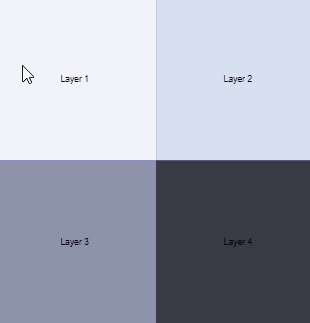

Tools Used
Ultimately, is there anything more important in web development than the user experience? And the holy grail of experience is interaction. I made this little suite of web toys to focus on dynamic, interactive web development. Users can interact with a click or a wave and influence image and sound.
HTML's versatile canvas lays the foundation for the toys with JavaScript doing the heavy (listening and transforming) lifting.
Before I got into web development, I studied music. It was a ton of fun to jump back in and compose some little tunes (each toy has its own short, looping melody). Rytmik is actually a rather nice middle point between composition programs like Finale that focus on traditional notation, and the trackers used for more tradition chiptune compositions.
The first, simplest toy, toggles four parts of a song on and off as you interact with the four images on the canvas.
The second, and my personal favorite, allows you to draw a picture, just waving your mouse over the canvas. After you're pleased with your design, you can watch the grass blades you made sway soothingly in a gentle, JavaScript breeze.
The final toy is a fun little dart game. It takes into account the angle your mouse is pointing, and how fast you're moving when you release the button.
Back to Project List